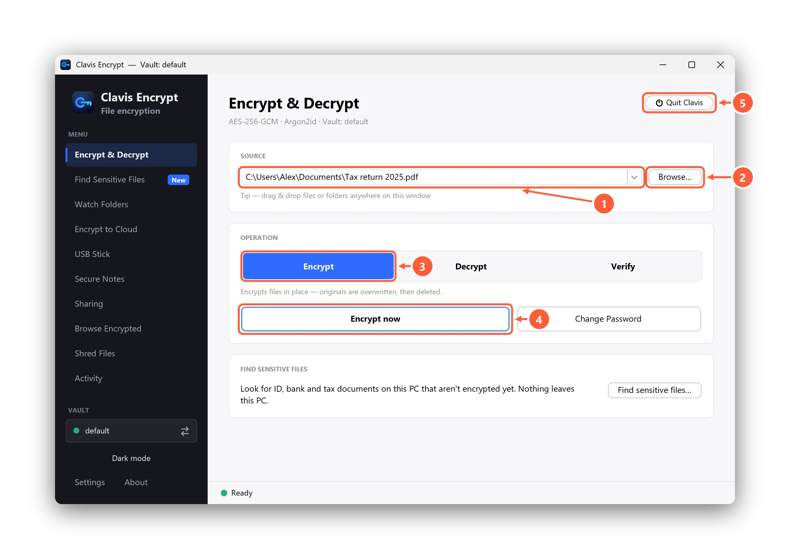

How to encrypt a folder in Windows 11 and 10 (free)
If you keep tax returns, passport and ID scans, contracts, client files or private photos in a folder on your PC, encrypting it means that even if your laptop is lost, stolen, sent for repair or used by someone else, those files stay unreadable without your password. What works depends on your edition of Windows: most laptops come with Home, which lacks the built-in folder encryption that Pro has. Here's every real option, step by step, with what each one can't do.
Which option works on your Windows?
| Method | Windows edition | What it locks | Protects while you're signed in | If you forget the password |
|---|---|---|---|---|
| EFS (Encrypt contents to secure data) | Pro, Enterprise, Education | A folder and its files, on NTFS drives | No: open to anyone using your Windows account | Tied to your Windows account; restore from a key backup |
| 7-Zip archive | Any, including Home | A copy of the folder inside one archive file | Yes, inside the archive | No way back in |
| VeraCrypt container | Any (admin rights to install) | A virtual drive you keep files in | Yes, while it's not mounted | No way back in |
| BitLocker / device encryption | BitLocker: Pro and up. Device encryption: Home too, on supported PCs | The whole drive, not a folder | No | Recovery key |
| Clavis Encrypt | Any, including Home (no admin rights) | Each file, with a random name; whole folders in Pro | Yes, each file | One-time recovery key |
1. EFS: “Encrypt contents to secure data” (Pro, Enterprise, Education)
- Right-click the folder → Properties.
- On the General tab, click Advanced….
- Tick Encrypt contents to secure data → OK → Apply.
- Choose Apply changes to this folder, subfolders and files → OK.
- When Windows offers to back up your file encryption key, do it, and keep the backup off the PC. (From the command line,
cipher /xbacks up your EFS certificate and keys.)
- Good: built in, no download, invisible once set up. New files you save in the folder are encrypted too.
- Catch: not on Home. It only works on NTFS drives, so copies on a FAT32 or exFAT USB stick, in email or in most cloud storage aren't protected. It's tied to your Windows account: anyone signed in as you can open the files, and if the account or PC breaks and you didn't back up the key, the files are gone.
Why is it greyed out? Almost always because the PC runs Windows 10 or 11 Home. On a Windows 11 Home PC, even the command-line tool cipher /e answers “The request is not supported.” It can also be greyed out on non-NTFS drives, or when an organisation's policy turns EFS off.
2. A password-protected 7-Zip archive (any Windows)
- Install the free 7-Zip.
- Right-click the folder → Show more options (Windows 11) → 7-Zip → Add to archive…
- Set Archive format to 7z, enter a password twice and tick Encrypt file names. 7-Zip uses AES-256.
- Press OK, check the archive opens with your password, then delete the original folder (and empty the Recycle Bin).
- Good: free, works on any edition of Windows 10 and 11, strong encryption, and one file is easy to copy or email.
- Catch: it's a locked copy. To use anything inside you extract it, and the extracted files are easy to forget on the PC. Changing a file means re-packing the archive. Windows' own Compress to ZIP file doesn't add a password.
3. A VeraCrypt container (any Windows, admin rights)
VeraCrypt creates an encrypted file that you mount as a drive letter; anything you put in it is encrypted. It's free, open source and strong, and works on Home. The catches: installing it needs administrator rights, you choose the container's size up front, you mount and unmount it each time, and a lost password can't be recovered.
4. BitLocker and device encryption: whole drives, not folders
BitLocker (Pro and up) and device encryption (also on Home, on supported PCs) encrypt the whole drive. Turn one on: it's the right protection for a lost or stolen laptop. But it isn't folder encryption. Once you're signed in, every folder is open as normal, and copies you make elsewhere aren't encrypted. Device encryption vs BitLocker explains the difference.
5. Clavis Encrypt (any Windows, no admin rights)
Clavis Encrypt encrypts files where they are, with AES-256-GCM, and gives each encrypted file a random name so even file names give nothing away. No account, nothing uploaded.
- Install Clavis (Windows 10 or 11, or Linux; no administrator prompt) and create your vault. Write down or print the recovery key it shows you.
- Free: open the folder, select its files (Ctrl+A), right-click → Show more options → Clavis → Encrypt. Clavis handles them as one batch with a single confirmation.
- Pro: right-click the folder itself → Clavis → Encrypt, or drag the folder onto the Clavis window, choose Encrypt and press Encrypt now. Every file in it, subfolders included, is encrypted in one go.
- Check the list Clavis shows you and confirm. To get files back, choose Decrypt and press Decrypt now.

- Good: works on Home without admin rights, each file stays encrypted wherever you copy it (USB stick, email, OneDrive), and there's a recovery key if you forget your password. Clavis Pro can also watch a folder, such as Downloads, and encrypt new files automatically.
- Catch: the app is closed source and hasn't been independently audited yet (the file format is public, with an open-source decryptor); it's Windows and Linux only; and it doesn't encrypt the whole drive, so keep device encryption or BitLocker on too. The originals are overwritten and deleted after encrypting, but on SSDs and USB sticks that's best effort; see what deleting really does on Windows 11.
Not sure which folders hold sensitive files? Clavis Pro's Find Sensitive Files page helps you find forgotten ID, bank and tax document scans on your PC, without uploading anything.
Which should you use?
- On Pro and only you use the PC? EFS is fine, as long as you back up the key.
- Need to send or archive a folder once? A 7-Zip archive.
- Comfortable with mounting drives and have admin rights? VeraCrypt.
- On Home, or want files to stay encrypted wherever you copy them, with a recovery key? A file-encryption app like Clavis.
- Everyone: also turn on device encryption or BitLocker for the whole drive.
On Windows 11 Home specifically, see how to encrypt files on Windows 11 Home. Still on Windows 10? See how to encrypt files on Windows 10. Comparing apps? Read Clavis vs Cryptomator vs AxCrypt vs BitLocker.
Whatever you choose, remember two things
Use a strong, unique password — encryption is only as strong as the password behind it. And keep a way back in. Good encryption means nobody can open your files without the password — including you. A recovery key or a key backup is what saves you if you forget it.
Questions
How do I encrypt a folder in Windows 11?
On Windows 11 Pro, Enterprise or Education: right-click the folder, Properties, Advanced, tick Encrypt contents to secure data, then OK and Apply, and back up your encryption key. On Windows 11 Home, use a password-protected 7-Zip archive, a VeraCrypt container, or a file-encryption app such as Clavis Encrypt.
How do I encrypt a folder in Windows 10?
The same way as Windows 11. On Windows 10 Pro, use Properties, Advanced, Encrypt contents to secure data. On Windows 10 Home, which has no EFS, use 7-Zip, VeraCrypt or a file-encryption app such as Clavis.
How do I encrypt a folder in Windows 11 Home?
Windows 11 Home has no built-in folder encryption. Put the folder in a 7-Zip archive with a password (7z format, Encrypt file names ticked), keep it in a VeraCrypt container, or encrypt its files with Clavis Encrypt: select all the files and encrypt them at once for free, or encrypt the whole folder in one step with Clavis Pro.
Why is Encrypt contents to secure data greyed out?
Usually because the PC runs a Home edition of Windows, which doesn't include EFS. It can also be greyed out on drives that aren't NTFS, such as FAT32 or exFAT USB sticks, or when an organisation's policy turns EFS off.
Can I password protect a folder in Windows without software?
Not on Home. On Pro, EFS encrypts a folder without extra software, but it uses your Windows sign-in rather than a separate password. Windows' built-in ZIP compression doesn't add a password, so for a folder password you need a tool such as 7-Zip, VeraCrypt or Clavis.
Is encrypting a folder with 7-Zip safe?
Yes, if you use the 7z format with AES-256, tick Encrypt file names and choose a strong password. The weak points are the password and the extracted copies you leave on the PC after opening the archive.
Does BitLocker encrypt a single folder?
No. BitLocker and device encryption encrypt whole drives. They protect a laptop that's lost or stolen while switched off, but once you're signed in every folder is open as normal.
Can I encrypt a folder for free with Clavis?
Clavis Free encrypts one or several files at once, so you can select every file in a folder and encrypt them together. Encrypting a folder itself, including its subfolders, in one step is part of Clavis Pro, a one-time purchase.
Sources
- Microsoft Learn: cipher (EFS on NTFS volumes; /x backs up the EFS certificate and keys)
- Microsoft Support: BitLocker Drive Encryption (not available on Windows Home)
- Microsoft Support: Device Encryption in Windows
- 7-Zip (AES-256 encryption in 7z and ZIP formats)
- VeraCrypt
The cipher /e result is from our own test on Windows 11 Home, October 2026.